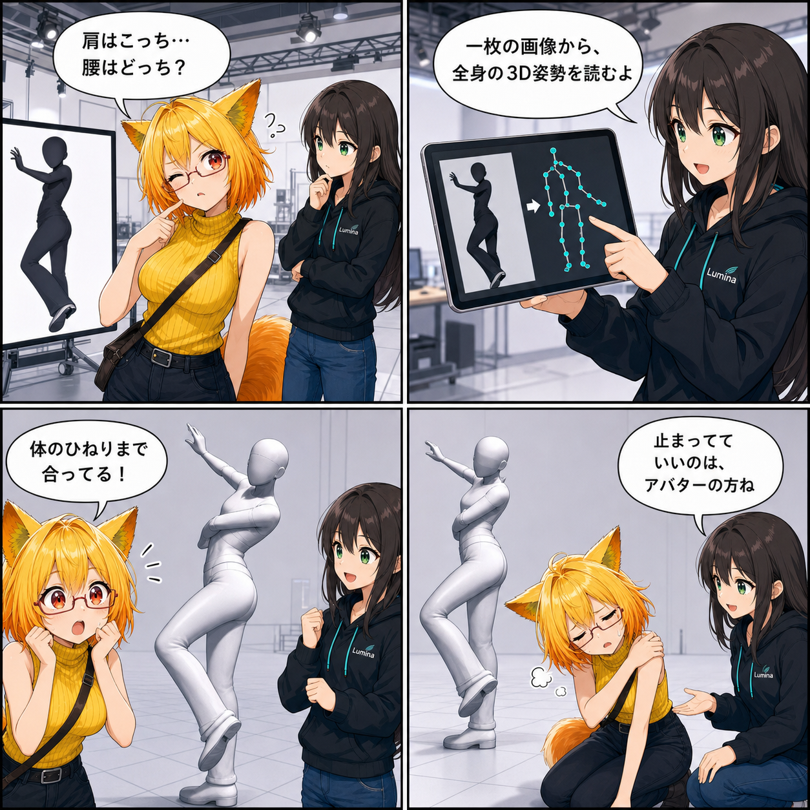

写真のひねりまで、アバターへ。AI画像ポーズを実装した日
1枚の人物画像から全身の3D姿勢を推定し、体幹のひねりを含む静止ポーズとして選択中のHumanoidアバターへ適用できるようにしました。
main ブランチでは集計期間内に19件のコミットがありました。終了時点のHEADは bace62a（Meta XRの未使用Editor UIを停止してアイドル負荷を削減）、期間全体では123ファイル、10,424行追加、511行削除です。現在のViewer作業ツリーには9ファイルの未コミット差分がありますが、実装日を確定できないため本日の実績には含めていません。集計期間は 2026-08-31 03:00:00 JST から 2026-09-01 02:59:59 JST までです。
1枚の画像を、編集できるポーズへ
Desktopの「ポーズ > プリセット」からPNGまたはJPEGを選ぶと、RTMW3D-Xが133個のWholeBody 3Dキーポイントを推定します。その結果を体の各チェーンの方向へ変換し、AvatarCanonicalRigを通して、現在選択中のアバターへ適用する経路を実装しました。
高解像度画像は縦横比を保ったまま長辺2048pxまで自動縮小してから推論用の384×288入力へ正規化します。初期版は単一人物の静止画像が対象で、動画から連続モーションを作る機能ではありません。推定後は既存のIK・関節編集で微調整し、「現在ポーズを保存」から残せます。
肩と腰の向きから、体幹のひねりを読む
左右の肩と腰の4点から肩フレームと腰フレームを組み立て、腰の向きと肩・腰の相対回転をHips、Spine、Chest、UpperChestへ分配する処理を追加しました。単眼画像では奥行きが曖昧になるため、Z方向の情報が弱い場合は前後回転を抑え、信頼度が低い場合は単純な体幹方向合わせへ戻します。急な反転を避ける角度制限も設けています。
適用したポーズをIdleに戻させない
画像ポーズの適用直前に、歩行やMotion Matchingが持っているIdleの制御を解除するよう修正しました。これにより、推定した静止ポーズが次のフレームでIdleへ上書きされる問題を防ぎます。ポーズリセットも、一時的な制御状態を整理して基準姿勢へ戻せるよう改善しました。
必要なときだけモデルを使う
AIポーズのモデルとGPU Workerは「ポーズ」画面へ入ったときに準備し、画像を変えても再利用します。画面を離れたら破棄し、通常時にAIポーズ用VRAMを常駐させない設計です。配布ビルドではAI画像ポーズとAIアニメーションを別々のFeature Flagで含めるか選べます。重量級モデルはGitへ入れず、ビルド前準備で検証して配布物へコピーします。
技術的なポイント
- PNG / JPEGから133個のWholeBody 3Dキーポイントを推定
- AvatarCanonicalRigを介した選択中Humanoidへのリターゲット
- 肩・腰フレームによる体幹ひねりの分配と安全なフォールバック
- 高解像度画像の縦横比を保った自動縮小
- Idle所有権を解除して静止ポーズの上書きを防止
- 画面単位のモデル・GPU Workerライフサイクルと独立した配布切替
ほかにも進んだこと
- Humanoidキャリブレーションの保存と歩行リターゲットを改善
- VRジェスチャー表情をVABの状態割当へ対応
- Skybox取込と物理天候レイヤーの重ね合わせを追加
- VCIのテキスト描画に対応
- アバター読込演出を負荷に応じて調整
- 未使用のEditor常駐処理を止め、アイドル時のCPU負荷を削減
4コマの裏話
今回は、ろひが写真のポーズを自分で再現しようとして肩と腰の向きに迷う「ポーズ伝言ゲーム」にしました。画像からアバターへ姿勢が伝わると体幹のひねりまで追従し、最後はアバターが静止できた横で、ろひ本人だけが無理な姿勢に疲れる身体コメディです。
まとめ
1枚の人物画像を全身3Dキーポイントへ変換し、体幹のひねりを含む静止ポーズとしてアバターへ適用できるようになりました。高解像度入力、モデルのライフサイクル、Idleとの所有権、配布切替まで含めて、既存のポーズ編集と保存へ安全につながる導線を整えています。
本日のひとこと： 写真は一枚、ポーズは立体。